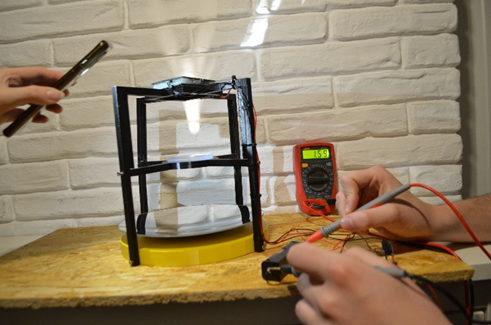
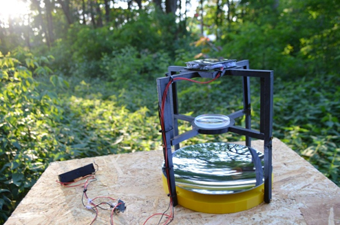
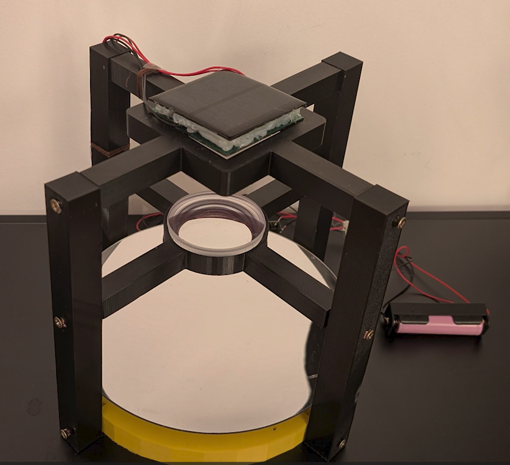
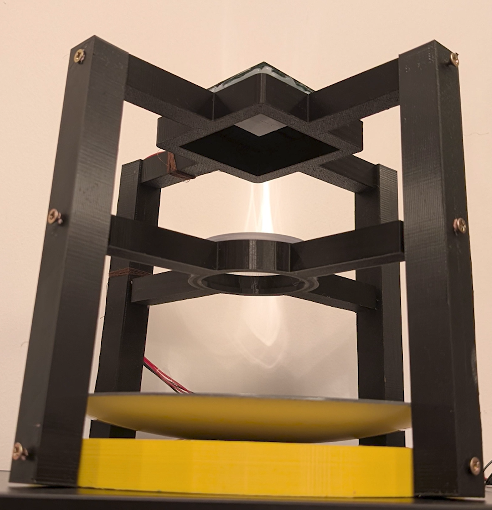
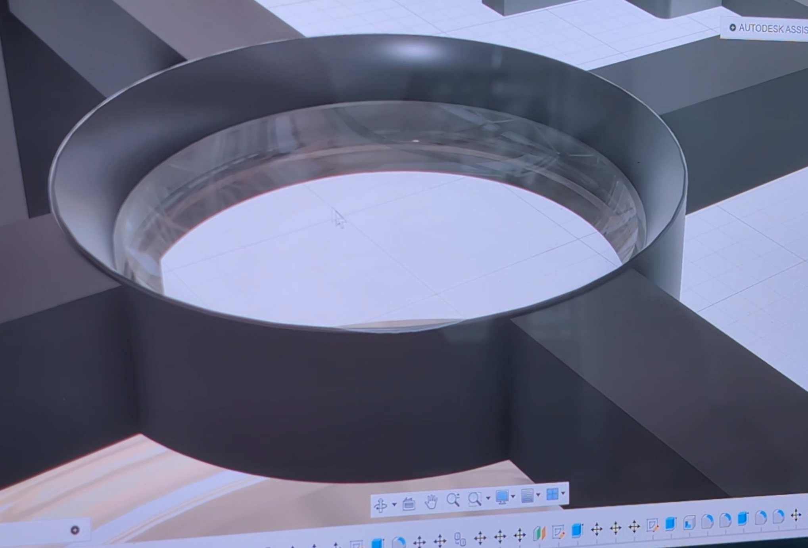
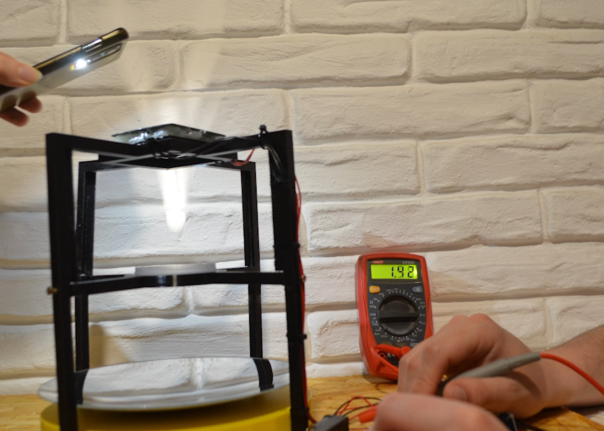
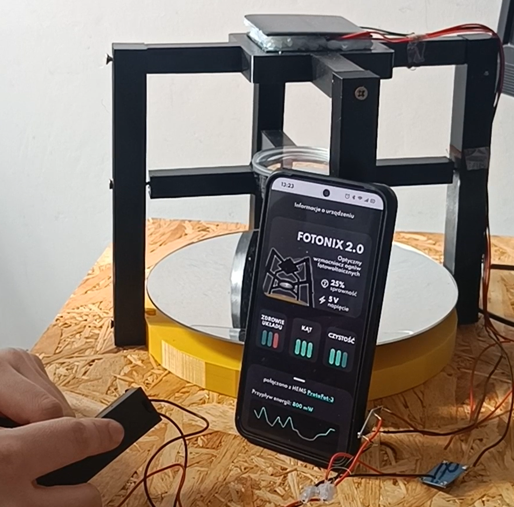
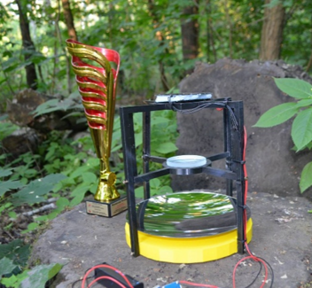
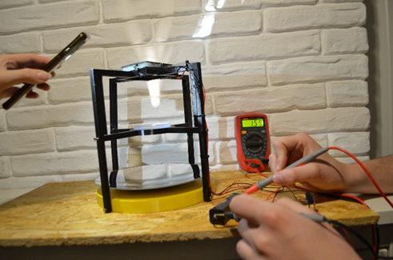
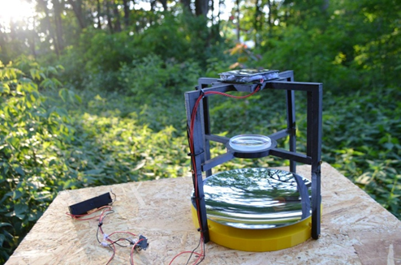
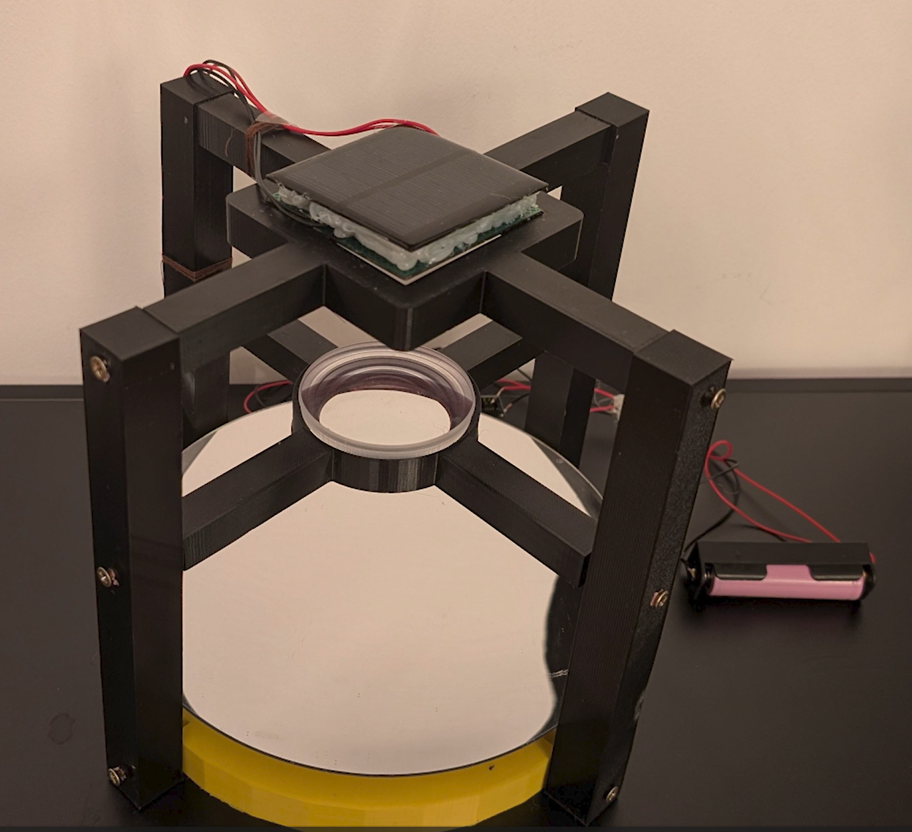
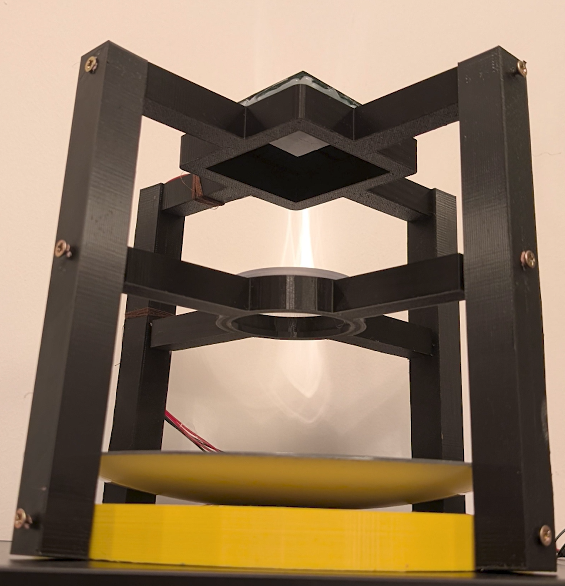
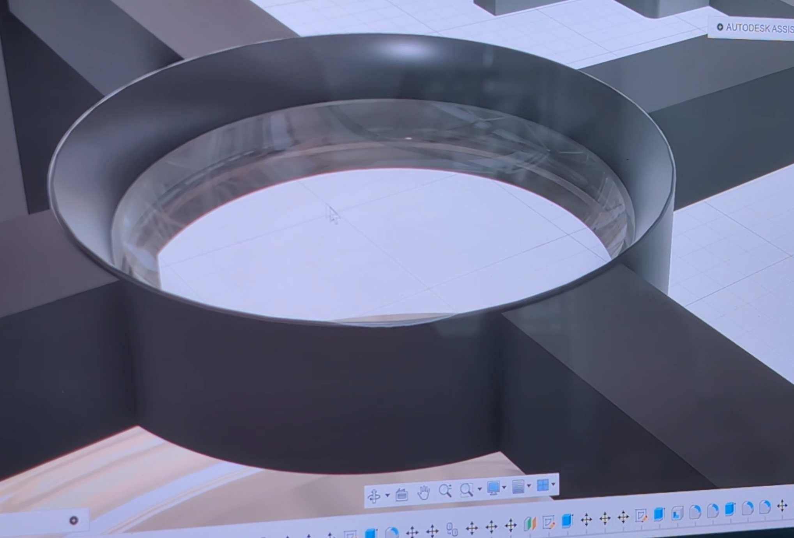
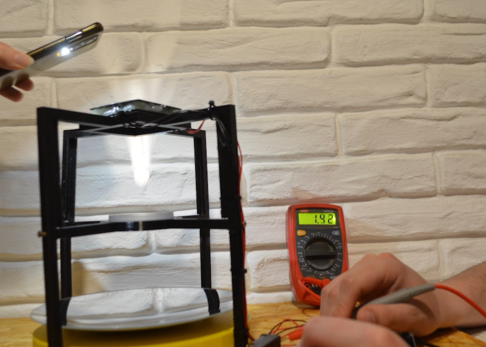
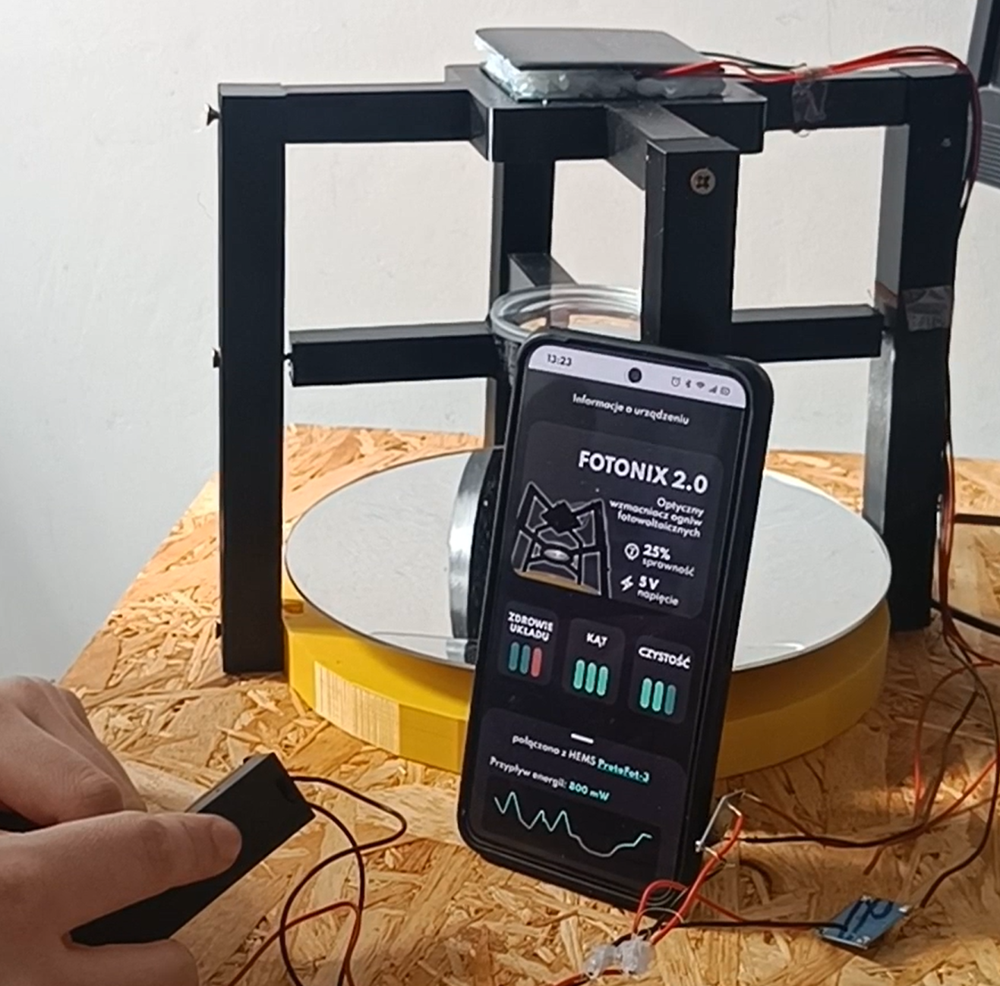
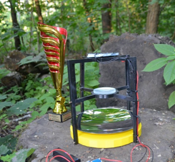
Photovoltaic (PV) technology has become one of the most widely adopted solutions for renewable energy generation. Despite significant progress in the efficiency and accessibility of photovoltaic systems, their performance remains strongly dependent on a variety of environmental and operational factors. For instance, suboptimal placement of PV panels can reduce energy conversion efficiency by up to 20%. Additional performance losses may result from non-ideal tilt and orientation angles relative to solar radiation, elevated operating temperatures, or surface contamination such as dust and dirt.
Contemporary PV installations typically rely on crystalline silicon-based cells, which dominate the global market due to their mature manufacturing processes and relatively high efficiency. However, these systems still require careful configuration and maintenance to achieve optimal energy yields. The effectiveness of an installation depends not only on the cell technology itself but also on the system’s design, including module orientation, shading management, and inverter efficiency.
With the increasing availability of renewable energy systems, user awareness and correct operation practices remain key factors influencing long-term system performance. Inadequate understanding of installation requirements and operational principles can lead to reduced efficiency and delayed return on investment. Therefore, ongoing research and development focus not only on improving material properties and cell architectures but also on optimizing system integration and maintenance strategies to enhance overall energy output and reliability.
CHALLENGES & THEIR POTENTIAL SOLUTIONSFotonix consists of a frame on which subsequent modules are mounted. These include:
The Fotonix system discussed in the example is mounted on a frame made in 3D printing technology, in which an ecologically sourced polylactide filament (PLA) ⌀1.75 mm with non-flammable and non-toxic properties was used. The same material is used in biomedical applications, including the creation of sutures - its potential application in tissue engineering is also being considered.
Counting from the bottom, the system consists of a concave mirror ⌀20 cm at f = 10 cm, which focuses light on a concave lens with dimensions ⌀10 cm, diffusing light onto the area of a 115x115x3mm 9 V/1.5 W photovoltaic panel 10 cm away.
In addition to the PV panel, the power module consists of an LM317 1.5A adjustable stabilizer, a TP4056 Li-Ion 18650 charger circuit, and an 18650 3.7V li-Ion 2200 mAh cell. For ease of use, a basket for the 1865 cell has also been added.
| Current technology | FOTONIX | |
|---|---|---|
| Output power | 1,5 W | 3-3,6 W |
For more information, please contact us at: